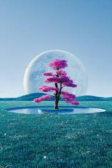
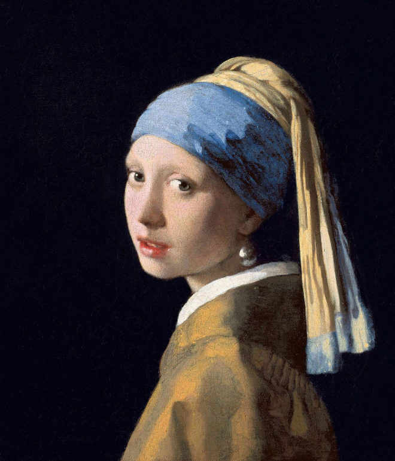
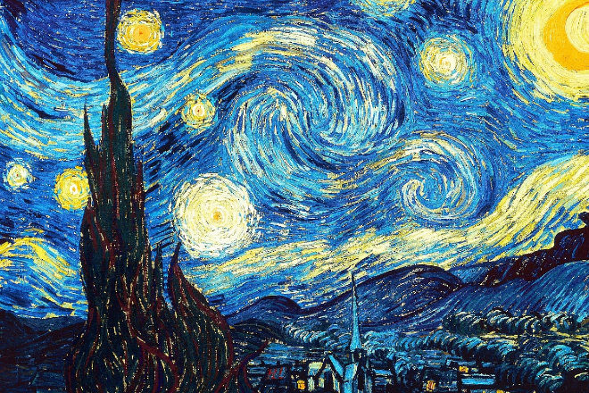
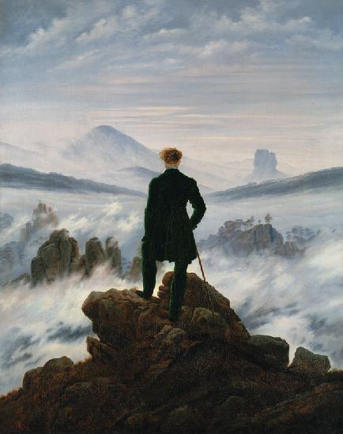

El arte es mas que solo cuadros, el arte es vida plasmada en lienzos
En esta sección encontraran una serie de pinturas de distintos artistas conocidos o anónimos los cuales quieren mostrar su forma de ver el mundo plasmado en sus lienzos los cuales esta ves nos comparten.
Galería

La creación
Juventud

La gran ola

Black mesa landscape

Un árbol en un campo con una luna llena en el fondo

La última cena

La joven de la perla

Colores de Rita Caruzzo
Der Berggipfel. Die Eiskönigin

La noche estrellada

El nacimiento de Venus

El caminante sobre el mar de nubes